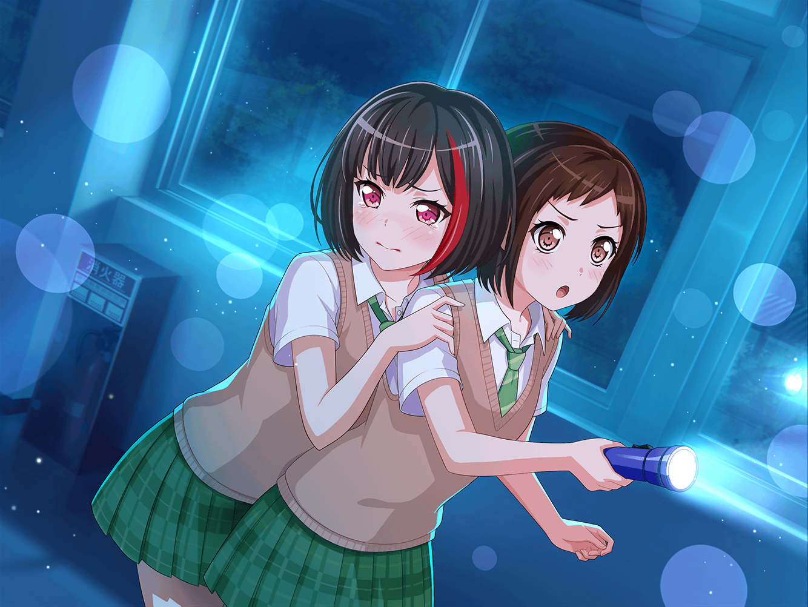

羽丘女子学園 廊下
蘭
……
つぐみ
……
モカ
……ねえ、蘭
蘭
な、なに？
モカ
……暑い
蘭
えっ？ なんで？
モカ
なんでって……蘭がくっついてるからだよ〜
蘭
……！
しょ、しょうがないじゃん！
ていうか、こうやって歩こうって言ったのひまりだし……
モカ
蘭が怖いのはわかるよ？
でも、これじゃさすがにくっつきすぎじゃない〜？
蘭
だって……怖いんだもん……っ！
モカ
つぐも暑いでしょ〜？ 背中
つぐみ
わ、私は大丈夫だよっ！
蘭ちゃん、安心してねっ！
蘭
……つぐみってごまかす時、めっちゃわかりやすいよね
つぐみ
えっ！？ で、でも大丈夫だよ、大丈夫！ うん！
こうやってくっついて歩けば、
みんながちゃんとついてきてるんだな〜ってわかるし！
つぐみ
それに、蘭ちゃんの怖さがちょっとでもまぎれるなら……
う、うん！ 大丈夫大丈夫！
蘭
モカはいいけど、つぐみにそう言われるとなんか……
申し訳ない気持ちになる……
モカ
え〜、あたしはいいの〜？ かなしみ〜
蘭
……少し、離れて歩くようにする
つぐみ
もし、不安になったらいつでも言ってね！
蘭ちゃん、がんばろう！
つぐみ
わっ！ 今、教室に人影が……
蘭
……っ！！！
モカ
お〜、蘭てば、あたしに抱きついてくるなんて
だいた〜ん
蘭
！！！
……ごめん……離れる……
つぐみ
さっきの人影、私のだった……驚かせてごめん……
蘭
さ、先進もう！
蘭
ひゃっ！？ 今、教室から物音が……
つぐみ
わあっ！？ ら、蘭ちゃん大丈夫っ！？
モカ
うわあ〜！ なにあれ……！？
蘭
何！？
モカ
……あ、ごめん。なんでもない
蘭
なんでもないって何！？ 逆に気になるじゃん！
モカ
……いや、蘭は知らないほうがいいと思う
蘭
なにそれ……っ！？
つぐみ
蘭ちゃん、大丈夫？
蘭
……だ、大丈夫……大丈夫だから……
モカ
……ねー、蘭。やっぱりくっついて歩こうよ
つぐみ
うん、そのほうが安心できるしね。
みんなが安心できるのが一番だよっ
蘭
えっ、けど……
モカ
なんかこのへん、急に涼しい感じしない？
寒いよ〜。ねー、つぐもそう思うでしょ〜
つぐみ
えっ！？ えっと〜、さ、寒いなあ〜！
不思議だねえ〜。みんなでくっついたら、
暖かくなるかなあ〜！？
蘭
……つぐみ、ホントそういうのヘタだね
つぐみ
……えへへ
蘭
……２人がいいなら、そうする
つぐみ
うん、そうしよう
モカ
おいでー、蘭
つぐみ
わあっ！？
モカ
くっつくのはいいけど、そんなにギューって抱きつかれたら
動けないよ〜
蘭
このまま歩くの
つぐみ
ふふっ。それじゃ行こう！